scalar_example = 1 # scalar value in r or pythonAppendix B — Matrix Operations
Addition, subtraction, multiplication, and division. These are all things you already know how to do with single numbers. What happens, though, if you want to multiply two different matrices together. Does that simple, ‘scalar’ operation still translate if you have a \(2x3\) matrix and a \(3x2\) matrix? If words like matrix and scalar make you break out in a sweat, then this chapter is for you!
Matrix operations, especially multiplication, are critical for understanding core aspects of how modeling actually produces all these cool results that help us discover so many interesting things. Knowing the underlying mechanics of matrix operations helps to demystify several issues that you might run into with your models. It can also help to get the gist of various articles and papers that you might come across. Before we get into any operations, though, let’s make sure we are together on some concepts.
A scalar is a single numeric value. It might help if you think about a scalar as a single ‘block’.
And just like we can line blocks up on the floor, we can put our scalars together to form a vector. A vector is a collection of scalars with a length of n. We can also think of a vector as a single row or column of scalars.

There are many ways to create a vector in R and Python. Here are a couple.
vector_example = 1:6
vector_example = c(1, 2, 3, 4, 5, 6)
vector_example = matrix(1:6, nrow = 1) # or ncol = 1import numpy as np
vector_example = range(5)
vector_example = [1, 2, 3, 4, 5] # as list
row_vector = np.array([1, 2, 3]) # create a row vector
column_vector = np.array([[1], [2], [3]]) # create a column vectorNow, we can take a few of our block vectors and stack them into a matrix, assuming the vectors are of the same size. A matrix is a two-dimensional collection of vectors, and it is the fundamental structure for tabular data and beyond.
And here is a matrix of specific values:
\[ \begin{bmatrix} 1 & 2 & 3\\ 4 & 5 & 6\\ 7 & 8 & 9 \end{bmatrix} \]
If you think about most tables you’ve ever seen, you’ll see that the simple matrix looks remarkably familiar!
matrix_example = matrix(1:6, nrow = 2, ncol = 3)
dim(matrix_example)matrix_example = np.array([[1, 2, 3], [4, 5, 6]])
matrix_example.shapeA matrix has two dimensions, rows and columns, which can be any size. When we talk about the dimensions of a matrix, we always make note of the rows first, followed by the columns. This matrix has two rows and three columns, so we have a \(2\times3\), or ‘two-by-three’ matrix1.
Beyond matrices, we can also have tensors – multi-dimensional arrays that generalize matrices to more than 2 dimensions. Tensors are widely used in machine learning applications, especially deep learning. For example, a 3D tensor might represent an image with dimensions for width, height, and color channels, visualized as a stack of matrices, or a cube of numbers. Even standard linear models can be conceptualized using tensor structures, such as when a third dimension extends the core data matrix to accommodate geographical regions (e.g., states) or other groupings (e.g., time points in longitudinal data).
B.1 Addition
Matrix addition, along with subtraction, is the easiest concept when dealing with matrices. There is one rule though: the matrices need to have the same dimensions. From a practical code perspective, if one is a scalar, addition of the scalar will be applied to every element in the matrix.
Let’s check out these two matrices:
\[ \stackrel{\mbox{Matrix A}}{ \begin{bmatrix} 1_{11} & 2_{12} & 3_{13}\\ 4_{21} & 5_{22} & 6_{23} \end{bmatrix} } \ \stackrel{\mbox{Matrix B}}{ \begin{bmatrix} 7_{11} & 8_{12} & 9_{13}\\ 9_{21} & 8_{22} & 7_{23} \end{bmatrix} } \]
You probably noticed that we gave each scalar within the matrix a label associated with its row and column position. We can use these to see how we will produce the new matrix.
Now, we can set this up as an addition problem to produce Matrix C:
\[ \stackrel{\mbox{Matrix A}}{ \begin{bmatrix} 1_{11} & 2_{12} & 3_{13}\\ 4_{21} & 5_{22} & 6_{23} \end{bmatrix} } + \stackrel{\mbox{Matrix B}}{ \begin{bmatrix} 7_{11} & 8_{12} & 9_{13}\\ 9_{21} & 8_{22} & 7_{23} \end{bmatrix} } = \stackrel{\mbox{Matrix C}}{ \begin{bmatrix} A_{11} + B_{11}& A_{12} + B_{12} & A_{13} + B_{13}\\ A_{21} + B_{21}& A_{22} + B_{22} & A_{23} + B_{23} \end{bmatrix} } \]
Now we can pull in the real numbers:
\[ \stackrel{\mbox{Matrix A}}{ \begin{bmatrix} 1_{11} & 2_{12} & 3_{13}\\ 4_{21} & 5_{22} & 6_{23} \end{bmatrix} } + \stackrel{\mbox{Matrix B}}{ \begin{bmatrix} 7_{11} & 8_{12} & 9_{13}\\ 9_{21} & 8_{22} & 7_{23} \end{bmatrix} } = \stackrel{\mbox{Matrix C}}{ \begin{bmatrix} 1 + 7 & 2 + 8 & 3 + 9\\ 4 + 9 & 5 + 8 & 6 + 7 \end{bmatrix} } \]
Giving us Matrix C:
\[ \stackrel{\mbox{Matrix A}}{ \begin{bmatrix} 1_{11} & 2_{12} & 3_{13}\\ 4_{21} & 5_{22} & 6_{23} \end{bmatrix} } + \stackrel{\mbox{Matrix B}}{ \begin{bmatrix} 7_{11} & 8_{12} & 9_{13}\\ 9_{21} & 8_{22} & 7_{23} \end{bmatrix} } = \stackrel{\mbox{Matrix C}}{ \begin{bmatrix} 8 & 10 & 12 \\ 13 & 13 & 13 \end{bmatrix} } \]
First, let’s create those matrices in R and Python.
In R, we can create a matrix with the matrix function or by row binding numeric vectors.
matrix_A = rbind(1:3, 4:6)
# The following is an equivalent
# to rbind:
# matrix_A = matrix(
# c(1:3, 4:6),
# nrow = 2,
# ncol = 3,
# byrow = TRUE
# )
matrix_B = rbind(7:9, 9:7)The task is just as easy in Python. We will import numpy and then use the matrix method to create the matrices:
import numpy as np
matrix_A = np.array([[1, 2, 3], [4, 5, 6]])
matrix_B = np.array([[7, 8, 9], [9, 8, 7]])Once we have those matrices created, we can use the standard + to add them together:
matrix_A + matrix_B [,1] [,2] [,3]
[1,] 8 10 12
[2,] 13 13 13matrix_A + 3 [,1] [,2] [,3]
[1,] 4 5 6
[2,] 7 8 9Just like R, we can use + with those matrices.
matrix_A + matrix_Barray([[ 8, 10, 12],
[13, 13, 13]])matrix_A + 3array([[4, 5, 6],
[7, 8, 9]])B.2 Subtraction
Take everything that you just saw with addition and replace it with subtraction! But just like addition, every matrix needs to have the same dimensions.
Here is the result:
\[ \stackrel{\mbox{Matrix A}}{ \begin{bmatrix} 1_{11} & 2_{12} & 3_{13}\\ 4_{21} & 5_{22} & 6_{23} \end{bmatrix} } - \stackrel{\mbox{Matrix B}}{ \begin{bmatrix} 7_{11} & 8_{12} & 9_{13}\\ 9_{21} & 8_{22} & 7_{23} \end{bmatrix} } = \stackrel{\mbox{Matrix C}}{ \begin{bmatrix} -6 & -6 & -6 \\ -5 & -3 & -1 \end{bmatrix} } \]
Subtracting matrices in R and Python is the same as addition, just using - instead.
matrix_A - matrix_B [,1] [,2] [,3]
[1,] -6 -6 -6
[2,] -5 -3 -1matrix_A - 3 [,1] [,2] [,3]
[1,] -2 -1 0
[2,] 1 2 3matrix_A - matrix_Barray([[-6, -6, -6],
[-5, -3, -1]])matrix_A - 3array([[-2, -1, 0],
[ 1, 2, 3]])B.3 Transpose
You might see a matrix denoted as \(A^T\) or \(A'\). The superscripted \(T\) or \('\) for matrix transpose. If we transpose a matrix, all we are doing is flipping the rows and columns along the matrix ‘main diagonal’. A visual example is much easier:
\[ \stackrel{\mbox{Matrix A}}{ \begin{bmatrix} 1_{11} & 2_{12} & 3_{13}\\ 4_{21} & 5_{22} & 6_{23} \end{bmatrix} } -> \stackrel{\mbox{Matrix A transposed} }{ \begin{bmatrix} 1 & 4 \\ 2 & 5 \\ 3 & 6 \end{bmatrix} } \]
In R, all we need is the t function:
t(matrix_A) [,1] [,2]
[1,] 1 4
[2,] 2 5
[3,] 3 6In Python, we can use numpy’s transpose method:
matrix_A.transpose() array([[1, 4],
[2, 5],
[3, 6]])matrix_A.T # shorthandarray([[1, 4],
[2, 5],
[3, 6]])B.4 Multiplication
Now you probably have some confidence in doing matrix operations. Just as quickly as we built that confidence, it will be crushed when learning about matrix multiplication.
When dealing with matrix multiplication, we have a huge change to our previous rule. No longer do our dimensions have to be the same! Instead, the matrices need to be conformable – the first matrix needs to have the same number of columns as the number of rows within the second matrix. In other words, the inner dimensions must match.
Look one more time at these matrices:
\[ \stackrel{\mbox{Matrix A}}{ \begin{bmatrix} 1_{11} & 2_{12} & 3_{13}\\ 4_{21} & 5_{22} & 6_{23} \end{bmatrix} } . \stackrel{\mbox{Matrix B}}{ \begin{bmatrix} 7_{11} & 8_{12} & 9_{13}\\ 9_{21} & 8_{22} & 7_{23} \end{bmatrix} } \]
Matrix A has dimensions of \(2\times3\), as does Matrix B. Putting those dimensions side by side – \(2\times3 * 2\times3\) – we see that our inner dimensions are 3 and 2 and do not match.
What if we transpose Matrix B?
\[ \stackrel{\mbox{Matrix B}^T}{ \begin{bmatrix} 7_{11} & 9_{12} \\ 8_{21}& 8_{22}\\ 9_{31} & 7_{32} \end{bmatrix} } \]
Now we have something that works!
\[ \stackrel{\mbox{Matrix A}}{ \begin{bmatrix} 1_{11} & 2_{12} & 3_{13}\\ 4_{21} & 5_{22} & 6_{23} \end{bmatrix} } . \stackrel{\mbox{Matrix B}^T}{ \begin{bmatrix} 7_{11} & 9_{12} \\ 8_{21}& 8_{22}\\ 9_{31} & 7_{32} \end{bmatrix} } = \stackrel{\mbox{Matrix C}}{ \begin{bmatrix} . & . \\ . & . \\ \end{bmatrix} } \]
Now we have a \(2\times3 * 3times2\) matrix multiplication problem! The resulting matrix will have the same dimensions as our two matrices’ outer dimensions: \(2\times2\).
Here is how we will get a \(2\times2\) matrix:
\[ \stackrel{\mbox{Matrix A}}{ \begin{bmatrix} 1_{11} & 2_{12} & 3_{13}\\ 4_{21} & 5_{22} & 6_{23} \end{bmatrix} } . \stackrel{\mbox{Matrix B}^T}{ \begin{bmatrix} 7_{11} & 9_{12} \\ 8_{21}& 8_{22}\\ 9_{31} & 7_{32} \end{bmatrix} } = \]
\[ \stackrel{\mbox{Matrix C}}{ \begin{bmatrix} (A_{11}*B_{11})+(A_{12}*B_{21})+(A_{13}*B_{31}) & (A_{11}*B_{12})+(A_{12}*B_{22})+(A_{13}*B_{32})\\ (A_{21}*B_{11})+(A_{22}*B_{21})+(A_{23}*B_{31}) & (A_{21}*B_{12})+(A_{22}*B_{22})+(A_{23}*B_{32}) \end{bmatrix} } \]
That might look like a horrible mess and likely isn’t easy to commit to memory. Instead, we’d like to show you a way that might make it easier to remember how to multiply matrices. It also gives a nice representation of why your matrices need to be conformable.
We can leave Matrix A exactly where it is, flip Matrix B\(^T\), and stack it right on top of Matrix A:
\[ \begin{bmatrix} 9_{b} & 8_{b} & 7_{b} \\ 7_{b} & 8_{b} & 9_{b} \\ \\ 1_{a} & 2_{a} & 3_{a} \\ 4_{a} & 5_{a} & 6_{a} \end{bmatrix} \]
Now, we can let those rearranged columns from Matrix B\(^T\) ‘fall down’ through the rows of Matrix A:
\[ \begin{bmatrix} 9_{b} & 8_{b} & 7_{b} \\ \\ 1_{a}*7_{b} & 2_{a}*8_{b} & 3_{a}*9_{b}\\ 4_{a} & 5_{a} & 6_{a} \end{bmatrix} = \stackrel{\mbox{Matrix C}}{ \begin{bmatrix} 50 & .\\ . & . \end{bmatrix} } \]
Adding those products together gives us 50 for \(C_{11}\).
Let’s move that row down to the next row in the Matrix A, multiply, and sum the products.
\[ \begin{bmatrix} 9_{b} & 8_{b} & 7_{b} \\ \\ 1_{a} & 2_{a} & 3_{a}\\ 4_{a}*7_{b} & 5_{a}*8_{b} & 6_{a}*9_{b} \end{bmatrix} = \stackrel{\mbox{Matrix C}}{ \begin{bmatrix} 50 & .\\ 122 & . \end{bmatrix} } \]
We have 122 for \(C_{21}\). That first column from Matrix B\(^T\) won’t be used any more, but now we need to move the second column through Matrix A.
\[ \begin{bmatrix} 1_{a}*9_{b} & 2_{a}*8_{b} & 3_{a}*7_{b}\\ 4_{a} & 5_{a} & 6_{a} \end{bmatrix} = \stackrel{\mbox{Matrix C}}{ \begin{bmatrix} 50 & 46\\ 122 & . \end{bmatrix} } \]
That gives us 46 for \(C_{12}\).
And finally:
\[ \begin{bmatrix} 1_{a} & 2_{a} & 3_{a}\\ 4_{a}*9_{b} & 5_{a}*8_{b} & 6_{a}*7_{b} \end{bmatrix} = \stackrel{\mbox{Matrix C}}{ \begin{bmatrix} 50 & 46\\ 122 & 118 \end{bmatrix} } \]
We have 118 for \(C_{22}\).
Now that you know how these work, you can see how easy it is to handle these tasks in R and Python.
In R, we need to use a fancy operator: %*%. This is just R’s matrix multiplication operator. We will also use the transpose function: t.
matrix_A %*% t(matrix_B) [,1] [,2]
[1,] 50 46
[2,] 122 118In Python, we can just use the regular multiplication operator and the transpose method:
matrix_A @ matrix_B.Tarray([[ 50, 46],
[122, 118]])You can see that whether we do this by hand, R, or Python, we come up with the same answer! While these small matrices can definitely be done by hand, we will always trust the computer to handle larger matrices. The main thing is to understand the mechanics behind the operation.
B.5 Division
Though addition, subtraction, and multiplication are all pretty straightforward, matrix division is not. In fact, there really isn’t such a thing as matrix division, we just use matrix multiplication in a particular way. This is similar to how we can divide two numbers, for example, \(a/b\), but we can also multiply by the reciprocal, \(a*(1/b)\). In matrix terms, this would look something like:
\[ AB^{-1} \]
While that may also seem straightforward on the surface, matrix inversion is not. The basic idea is that we are looking for a matrix that, when multiplied by the original matrix like \(B\), gives us the identity matrix. The identity matrix is a matrix that has 1s along the diagonal and 0s everywhere else.
\[ \begin{bmatrix} 1 & 0 & 0\\ 0 & 1 & 0\\ 0 & 0 & 1 \end{bmatrix} \]
Another caveat is that not all matrices have inverses. If the determinant of a matrix is 0, then it does not have an inverse. Technically, only square matrices can have inverses, but not all square matrices have inverses. We can, however, get a pseudo-inverse for nonsquare matrices.
matrix_B_inv = MASS::ginv(matrix_B)
round(matrix_B %*% matrix_B_inv) [,1] [,2]
[1,] 1 0
[2,] 0 1matrix_B_inv = np.linalg.pinv(matrix_B)
(matrix_B @ matrix_B_inv).round()array([[ 1., -0.],
[-0., 1.]])More to the point, when would we do this? In the world of modeling, we might use matrix inversion to solve a system of equations. For example, this can be implemented in linear regression, where we are trying to find the coefficients that minimize the error in our model. That problem has an analytical solution that involves matrix inversion.
\[ \beta = (X^TX)^{-1}X^Ty \]
Let’s see this for ourselves. We will create a simple linear regression model and solve for the coefficients using matrix inversion.
set.seed(123)
x = rnorm(100)
y = 2*x + rnorm(100)
X = cbind(1, x)
beta = MASS::ginv(t(X) %*% X) %*% t(X) %*% y
tibble(
ours = beta[,1],
standard = coef(lm(y ~ x))
)# A tibble: 2 × 2
ours standard
<dbl> <dbl>
1 -0.103 -0.103
2 1.95 1.95 import statsmodels.api as sm
import pandas as pd
np.random.seed(123)
x = np.random.normal(size = 100)
y = 2*x + np.random.normal(size = 100)
X = np.c_[np.ones(100), x]
beta = np.linalg.pinv(X.T @ X) @ X.T @ y
betaarray([-0.01908575, 1.98340745])model_sm = sm.OLS(y, X)
results_sm = model_sm.fit()
coefficients_sm = results_sm.params
pd.DataFrame({
'ours': beta,
'standard': coefficients_sm
}) ours standard
0 -0.019086 -0.019086
1 1.983407 1.983407B.6 Summary
While matrix operations are not something we explicitly do everyday data science, it is always lurking behind the scenes. Having a grasp of the underlying model mechanics helps demystify the modeling process, and can greatly expand a data scientist’s abilities when you have to dive into matrix operations for model building. Whether linear regression or deep learning, matrix operations are at the core of almost every model you come across.
Numpy arrays/matrices are in row major order, while R is column major order. You’ll note how with numpy we essentially provided two rows to the array function, which automatically created the \(2\times3\) matrix. The R matrix is not the same, because by default it fills in the columns. If you add
by_row = TRUE, you’d then get the same result as the numpy example. Column major is generally more intuitive for tabular data, because that’s how we think of data stored in tables, and why the pandas package in Python is also column major/oriented. However, both R and Python are very flexible and more generally work in arrays. If you use both, it can take a bit to settle with one if you’ve used the other (especially for ‘apply’ functions). The reticulate package has a vignette that provides a nice overview, while the rray package actually brings the numpy approach to the R landscape.↩︎